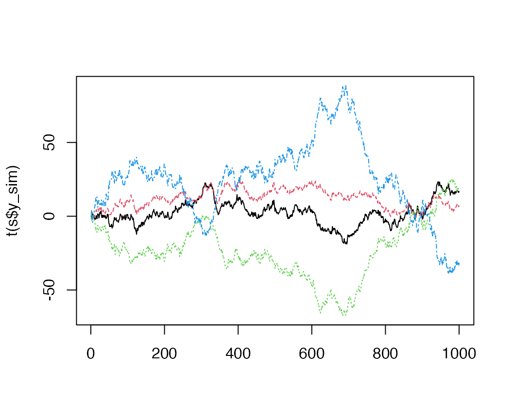

vignettes/bigdata.Rmd
bigdata.RmdHere we will walk through how to use the bayesdfa package to fit dynamic factor analysis (DFA) to very large datasets.
Let’s load the necessary packages:
Ordinarily, DFA estimation can be very slow. This is especially true using Bayesian methods, but also with packages like MARSS that implement maximum likelihood / EM algorithm. Long time series, with 100s or 1000s of data points are common, and have made application of DFA difficult.
As an example, we’ll simulate 4 time series of 1000 time steps, generated from 2 underlying trend models

An alternative to estimation via MCMC is taking advantage of Stan’s Maximum a posteriori estimation (MAP) via rstan::optimizing().
The function fit_dfa() has an argument estimation that defaults to “sampling” (equivalent to performing MCMC). This argument can also be “none” if a model is just to be constructed – and not fit. We also allow this option to be set to “optimizing”, which allows for fast MAP estimation.
For our example dataset, this becomes
Elements of fit$model contain the returned object
names(fit$model)## [1] "par" "value" "return_code" "theta_tilde"These include the maximized log posterior,
fit$model$value## [1] -30707.4And a flag indicating convergence (0 = converged)
fit$model$return_code## [1] 0By default, parameters are returned in a giant vector, which may be difficult to work with. These are stored in fit$model$par. As an alternative, we can add the ‘as_vector’ argument to rstan::optimizing(),
fit = fit_dfa(y = s$y_sim, num_trends = 2,
estimation="optimizing",
as_vector = FALSE)With this new approach, fit$model$par is a list object – and elements can be accessed as
Z = fit$model$par$Z
x = fit$model$par$xetc.
By default, the Hessian is not returned from the MAP estimation – but this may be desired for expressing uncertainty around estimates. This can be returned by modifying the hessian argument,
fit = fit_dfa(y = s$y_sim, num_trends = 2,
estimation="optimizing",
hessian = TRUE)By default, rstan::optimizing() uses random initialization. This may cause the algorithm (by default “LBFGS”) to occasionally be stuck, and the optimization to not converge. In these cases, we recommend re-fitting a model a number of times to ensure that models are converging.
In addition to the rstan::optimizing() method, the rstan package allows for variational inference, with the specification of rstan::vb(). We allow this to be an argument into fit_dfa() as well. As a note of caution, the Stan developers note that this method is still in development, and calls to rstan or rstan::sampling() are recommended. Link here: https://mc-stan.org/rstan/reference/stanmodel-method-vb.html
fit = fit_dfa(y = s$y_sim, num_trends = 2,
estimation="vb")